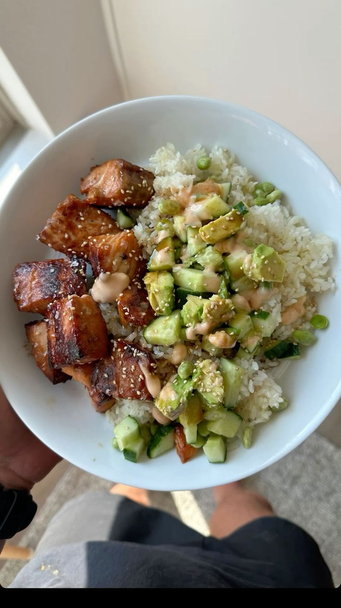

Ingredients
- 1 block firm tofu, pressed and cubed
- 1 red bell pepper, sliced
- 1 small onion, sliced
- 1 cup pineapple chunks (fresh or canned)
- 2 tbsp soy sauce (or tamari)
- 2 tbsp rice vinegar
- 2 tbsp ketchup
- 1 tbsp brown sugar or maple syrup
- 1 tsp cornstarch mixed with 2 tbsp water (slurry)
- Cooked rice or quinoa, for serving
- Optional garnish: sesame seeds, sliced green onion
Instructions
- Press the tofu for 10–15 minutes to remove excess water, then cut into cubes.
- Heat a tablespoon of oil in a skillet over medium-high heat. Add tofu and cook until golden and crisp on all sides. Remove and set aside.
- In the same pan, add a little more oil if needed and sauté the sliced onion and bell pepper until softened, about 3–4 minutes.
- Add the pineapple chunks and cook 1–2 minutes more to warm them through.
- In a small bowl, whisk together soy sauce, rice vinegar, ketchup, and brown sugar (or maple syrup).
- Pour the sauce into the pan and bring to a simmer. Stir in the cornstarch slurry and cook until the sauce thickens slightly.
- Return the tofu to the pan and toss to coat everything evenly in the sauce. Cook 1–2 minutes more to heat through.
- Serve over cooked rice or quinoa and garnish with sesame seeds and sliced green onion if desired.